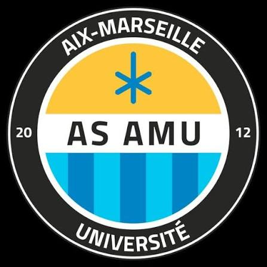
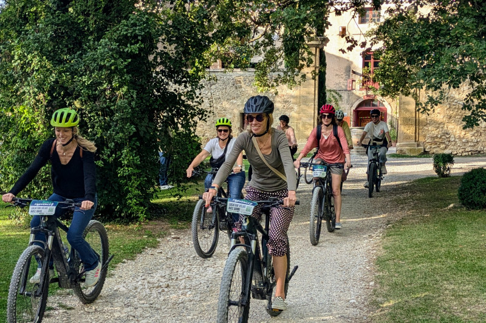

LE SPORT À AIX-EN-PROVENCE
Aix-en-Provence est une ville dynamique où le sport tient une place centrale, offrant un cadre idéal entre nature et infrastructures modernes pour tous les passionnés d'activité physique.
En tant qu'étudiant
La vie étudiante à Aix-en-Provence est rythmée par de nombreuses opportunités de bouger, que ce soit pour le loisir ou la compétition.
Le SUAPS
En association

De nombreuses associations étudiantes organisent des événements sportifs, des tournois et des sorties, favorisant l'esprit d'équipe et la convivialité.
En plein air
Profitez du climat exceptionnel de la Provence pour pratiquer vos activités sportives favorites au grand air.
La montagne Sainte-Victoire
Le parc Jourdan
Le vélo

La ville dispose de nombreuses pistes cyclables et de sentiers adaptés pour les amateurs de vélo, permettant de découvrir Aix-en-Provence et ses environs à deux roues.
Dans les salles de sport
Keep Cool
Basic Fit
Fitness Park
One Fitness Club
Gaius Hybrid Club
On Air
Biofitnessclub
À la piscine
Plongez au cœur des infrastructures aquatiques de la ville pour nager, vous perfectionner ou vous détendre.